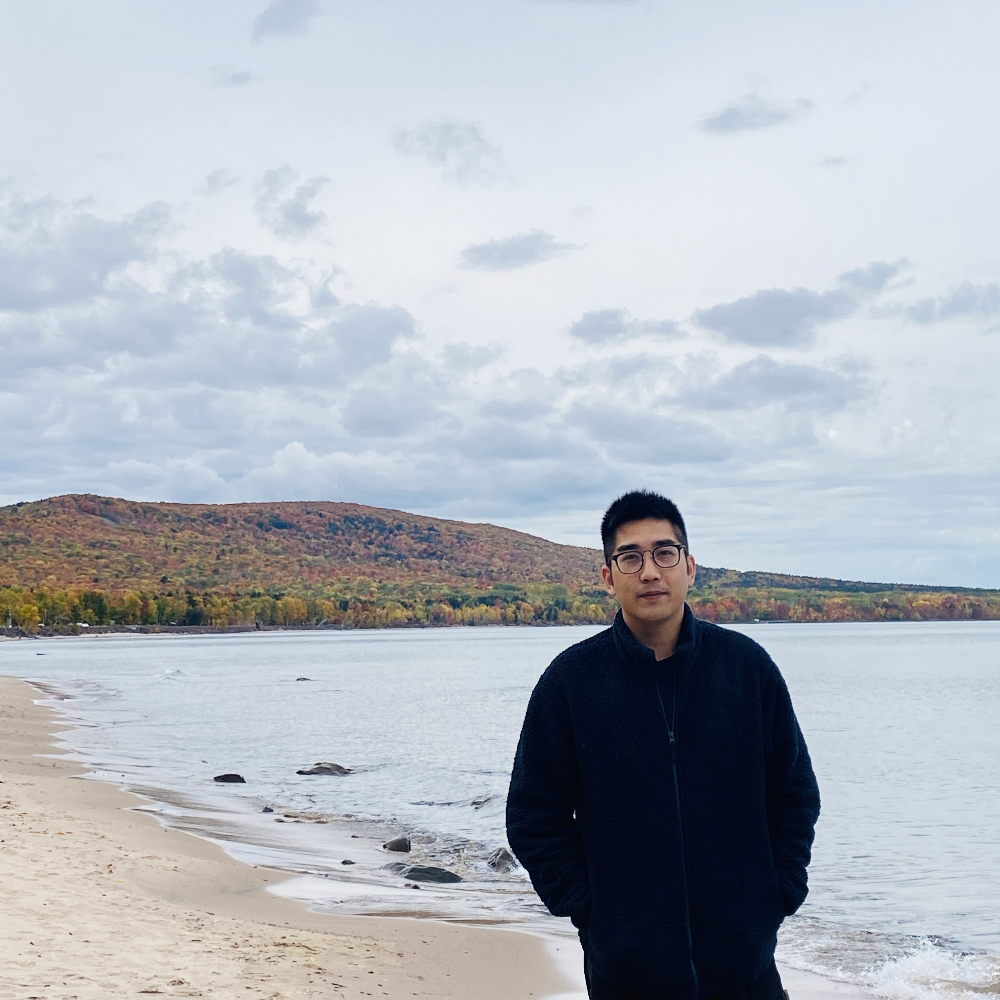

Department of Computer Science and Engineering
The Ohio State University
Columbus, Ohio, USA
Email: zhou.3820 [At] osu [Dot] edu

PhotoI am a Ph.D. candidate in the Department of Computer Science and Engineering at The Ohio State University (OSU), advised by Prof. Zhihui Zhu. I received my Master's degree in Electrical Engineering and Computer Science from the University of Michigan, Ann Arbor in 2021, and my Bachelor's degree in Electrical Engineering and Automation from Huazhong University of Science and Technology (HUST) in 2019.
My research interests broadly lie in deep learning theory and computer vision. In particular, I have been working on understanding the optimization and generalization of deep neural networks, with a focus on topics such as Neural Collapse, diffusion models, and vision-language models.
* indicates equal contribution